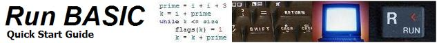
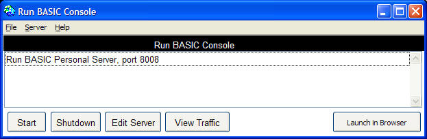
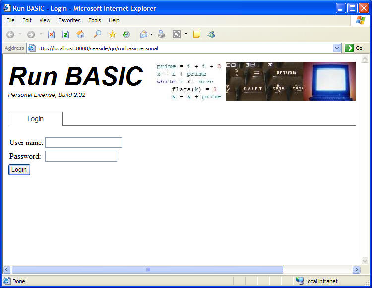
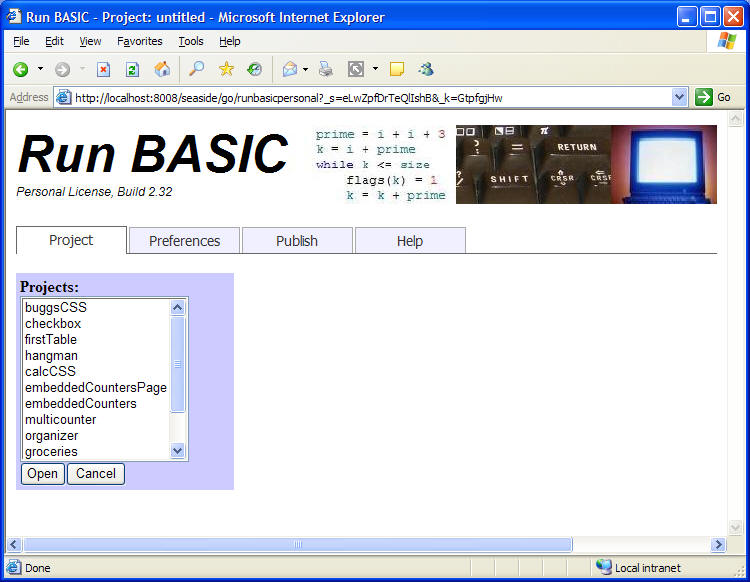
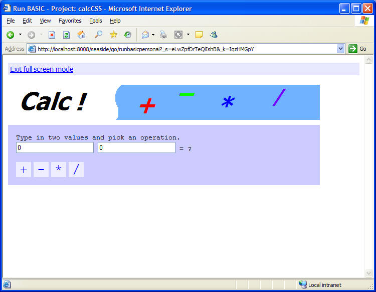
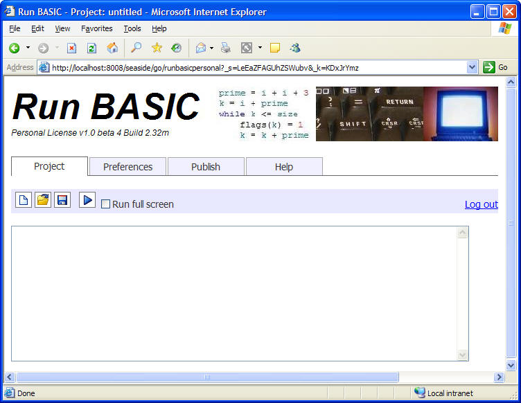
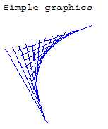
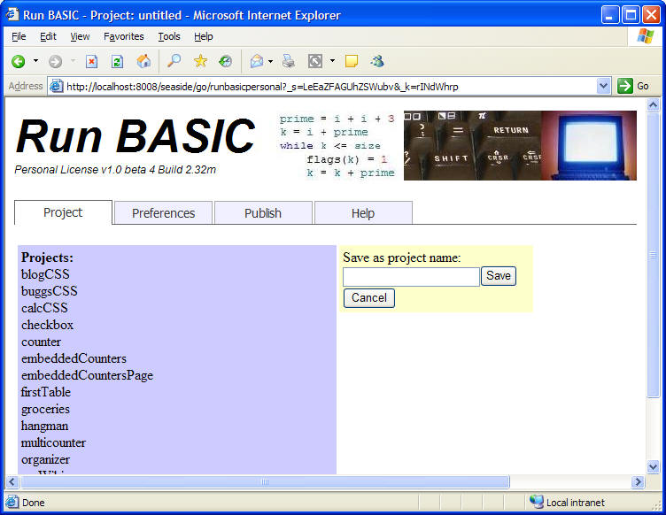
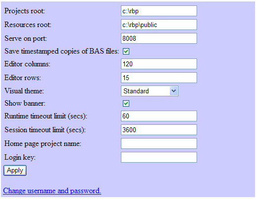
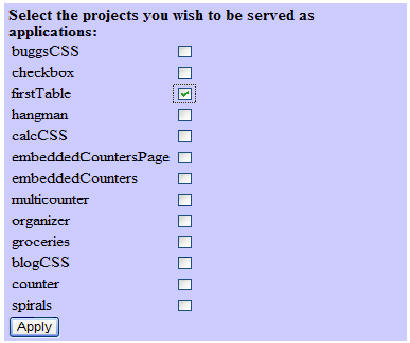

Using Run BASIC Personal - Quick Start Guide
For support questions and bug reports go to http://runbasic.proboards82.com.
First things first
Starting up
Logging In
Try an example
Create your own program
The preferences tab
The publish tab
Windows Vista, and the location of the Run BASIC installation - The reason that Run BASIC is installed into a folder in the root directory (c:\rbfree) instead of the Program Files folder is because Vista's draconian security would otherwise prevent read/write access to files that Run BASIC needs. Since Run BASIC will also be available for Linux and the Mac OS it seems an undue burden to provide for a unique Windows version that has special file location needs. Perhaps we will expend some energy to make Vista happy, but only after we get initial releases out for all OSes.
There are two ways to start up the Run BASIC server:
Using the Windows Start menu, find the Run BASIC program group and click on Start Run BASIC Free.
Or:
Open a command prompt and use CD to change to the Run BASIC folder. Then type rbp rb.im and press Enter to launch the Run BASIC Server Console.
A window will appear like so:

Run BASIC is a web server and you access it using a web browser. Click the Launch in Browser button to start a web browser pointing at the server. NOTE: Since Run BASIC is a web server you may find it necessary to setup Windows Firewall to allow traffic to the Run BASIC server. Windows will probably pop up a security notice asking if you want to unblock rbp.exe. You need to unblock it if you want to use Run BASIC.
Note: This section describes a feature of the upgrades server edition of Run BASIC. Skip to The Project Tab below if you are using the free edition.
Once you have clicked on the Launch in Browser button you will see a web browser appear that looks like so:

Type in the username and password (they are 'username' and 'password' but you can change them). Now you will see:
The Project Tab
See the toolbar. It has four buttons for New Project, Open Project, Save Project, and Run. Also notice the Run full screen checkbox which allows you to hide the banner and code editor when you test your programs. There is also a Log out link to the far right.
Click on the Open Project button to see:

Click on calcCSS and then Open. Check the Run full screen checkbox and then click the Run button :

When you're done with the calculator, click on the Exit full screen mode link to go back to the code editor.
To create a program of your own, click on the New Project button to create a new blank editor. See below how it says Project: untitled at the top of the browser window.

Type or copy and paste the following code into the editor:
print "Simple graphics"
graphic #myDrawing, 200, 200
#myDrawing color("blue")
for x = 20 to 60 step 3
#myDrawing line(x, x*3, 180-x*3, x)
next x
render #myDrawing
Try running it to see this:

Now click on the Save Project button and you'll see something like:

So give your project a name (myDrawing perhaps?). Type it into the field under Save as project name and click on the Save button to save your project. The project will be saved in a folder named name_project with a filename of name.bas.
Note: Each time you save changes to your code Run BASIC will write not only name.bas but also a second copy with date and time information in the filename (for example name20071226-181914.bas which encodes the date Dec 26, 2007 and the time 18:19:14). This way you will have a history of the different versions of your code that you have saved.
Click on the Preferences tab to see this:

Note: The following items can only be customized by users of the upgraded server edition of Run BASIC.
Runtime timeout limit - This setting is good for killing programs that run out of control. For example this will kill a program that is running in an infinite loop.
Session timeout limit - This setting will kill your login session after the specified number of seconds. You might want to set this to a very large number if you are working from home, or to a small number if you are logging in from a remote place.
Home page project name - Specify which app to run when someone visits the server. Make sure the application is also checked in the Publish tab. This causes the login screen to be disabled, so use the Login key field to specify an app name for the login screen so you can still log in.
Login key - Specify an app name for the login screen so you can still log into the server when you've specified a Home page project name. For example if you specify the name secretKey then add ?app=secretKey to the URL when you want the login screen.
Change username and password - Use this to set your own username and password. Try not to lose this information. If you do you will need to delete the prefs.xml file and restart the server to reset to 'username' and 'password'.
Note: This section describes a feature of the upgraded server edition of Run BASIC.
The Run BASIC server can serve any project as an application. To do this, go to the Publish tab and check the box next to the project you want to serve.

Notice that we check the firstTable project. To launch this application, the URL should look like this:
http://localhost:8008/seaside/go/runbasicpersonal?app=firstTable